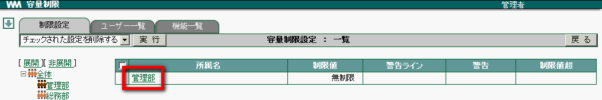
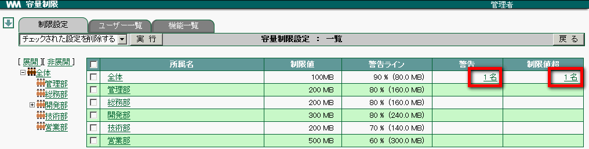
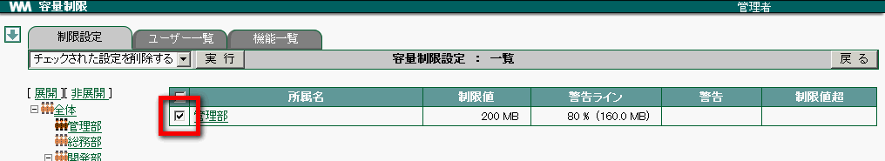
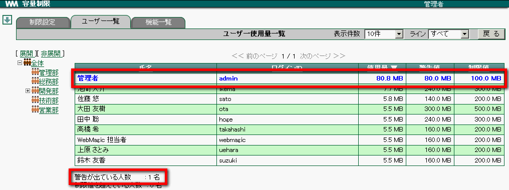
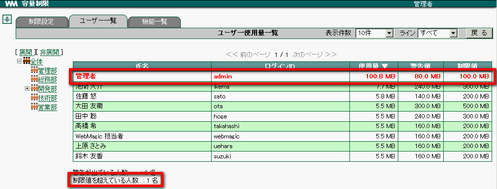
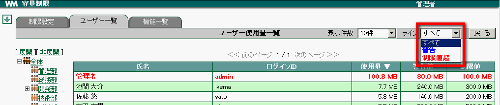

19. 容量制限¶
19.1. 所属毎の容量を決める¶
所属毎に使用できる容量を決めましょう。
メニューの
 をクリックします。
をクリックします。 をクリックします。
をクリックします。左側のツリーから所属を選択します。

容量を設定したい 所属名 をクリックします。

容量各項目を設定し、 登録 をクリックします。

登録された値が一覧に表示されます。

Note
全体 に容量を設定すると、制限値が設定されていない所属にも適用されます。制限値が設定されている場合は チェックボックス が表示されます。
19.2. ラインを超えているユーザーを確認する¶
警告値または制限値を超えているユーザーを制限設定画面から確認します。
メニューの
をクリックします。- をクリックします。
警告・制限値 を超えているユーザーがいる所属は以下のように表示されます。

リンクをクリックすると、 [ユーザー一覧] タブへ移動し超えているユーザーが表示されます。

19.3. 所属毎の設定を削除する¶
メニューの
をクリックします。- をクリックします。
削除したい所属の設定にチェックを付けます。

プルダウンメニューから チェックされた設定を削除する を選択し、 実行 をクリックします。

Note
設定が削除された所属の制限値はデフォルトの 無制限 になります。
19.4. ユーザー毎の使用容量を一覧する¶
メニューの
をクリックします。- をクリックします。
[ユーザー一覧] タブをクリックします。
ユーザーの使用容量が一覧されます。

警告値を超えたユーザーは 青色 で表示されます。

制限値を超えたユーザーは 赤色 で表示されます。

19.5. 表示をライン毎に切り替える¶
メニューの
をクリックします。- をクリックします。
[ユーザー一覧] タブをクリックします。
表示したいラインを選択します。

19.6. 機能毎の使用容量を一覧する¶
各機能毎の容量一覧が表示されます。
メニューの
をクリックします。- をクリックします。
[機能一覧] タブをクリックします。
機能毎の使用容量が一覧されます。

Warning
共有領域 には設定画面にある機能の容量と WebMagic で必要なシステム領域が含まれています。
19.7. 容量の最適化をする¶
メニューの
をクリックします。- をクリックします。
[機能一覧] タブをクリックします。
最適化 をクリックします。

「最適化を行います」のメッセージが表示されますので、 OK をクリックします。
Warning
共有領域 は設定画面と WebMagic で必要なシステム領域の容量を合計してます。システム領域の容量を最適化することはできません。
Note
最適化中は 最適化 のボタンがクリックできなくなります。